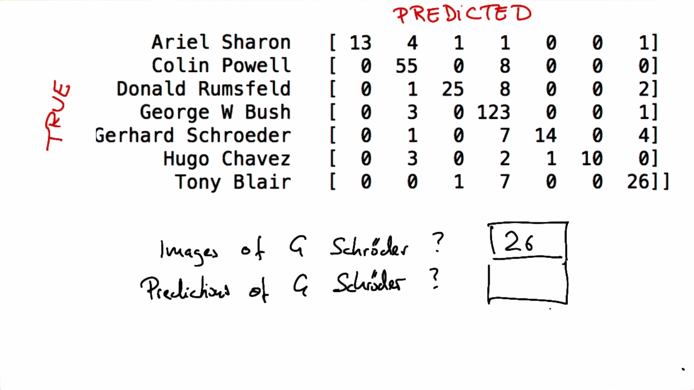

Evaluation Metrics
Back to Home
01. Welcome to Evaluation Metrics Lesson
02. Accuracy Review
03. Shortcomings of Accuracy
04. Picking the Most Suitable Metric
05. Confusion Matrices
06. Confusion Matrix Practice 1
07. Confusion Matrix Practice 2
08. Filling in a Confusion Matrix
09. Confusion Matrix: False Alarms
10. Decision Tree Confusion Matrix
11. Confusion Matrix for Eigenfaces
12. How Many Schroeders
13. How Many Schroeder Predictions
14. Classifying Chavez Correctly 1
15. Classifying Chavez Correctly 2
16. Precision and Recall
17. Powell Precision and Recall
18. Bush Precision and Recall
19. True Positives in Eigenfaces
20. False Positives in Eigenfaces
21. False Negatives in Eigenfaces
22. Practicing TP, FP, FN with Rumsfeld
23. Equation for Precision
24. Equation for Recall
25. Welcome to the End of Evaluation Lesson
26. Evaluation Mini-Project Video
27. Applying Metrics to Your POI Identifier
28. Number of POIs in Test Set
29. Number of People in Test Set
30. Accuracy of a Biased Identifier
31. Number of True Positives
32. Unpacking Into Precision and Recall
33. Recall of Your POI Identifier
34. How Many True Positives?
35. How Many True Negatives?
36. False Positives?
37. False Negatives?
38. Precision
39. Recall
40. Making Sense of Metrics 1
41. Making Sense of Metrics 2
42. Making Sense of Metrics 3
43. Making Sense of Metrics 4
44. Metrics for Your POI Identifier
Back to Home
13. How Many Schroeder Predictions
How Many Schroeder Predictions
Question:
Start Quiz:

Solution:
Next Concept